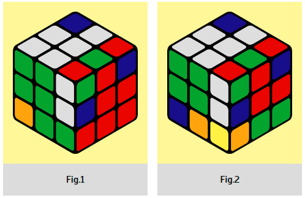

Start with any unassembled corner and do bang-bangs until the corner is
assembled. (Fig. 1) Then twist the bottom layer and substitute the next unfolded corner (Fig.
2). Continue doing bang-bangs until the 2nd corner is assembled (Fig. 3) and so on. ( ATTENTION!
If the corner is already assembled, you still need to finish the bang-bang to the end, and only
then proceed to the next one). When you unfold all the corners, the cube will be assembled, do
not forget to turn the last movement.
Warning
This is where it is easiest to stumble somewhere. Therefore, be careful, otherwise the cube will
have to be assembled again.
|  |